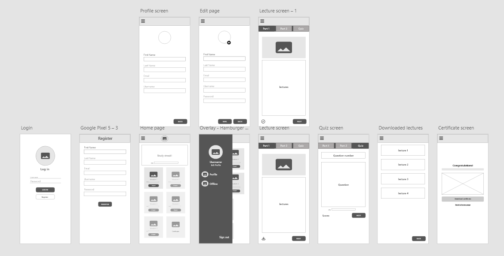

Android app, mobile development university course project
#Code app
- The problem
- Learning a programming language can feel daunting and exhausting, and the three students I interviewed reported procrastination, distress and low motivation.
- The outcome
- A study app with bite-size C# lessons, motivating copy, study streaks, downloadable modules and a completion certificate, approved by our professor as client.
- My role
- I ran the user research, shared the flowcharts, designed the wireframes with one UI designer, prototyped, and built the UI.

Hard to stay motivated while learning to code
The app is for anyone learning a programming language, with a focus on computer science and IT students. Our class asked for any Android app, and we chose a topic we knew, which made interviewing users easy.
How I researched
- Interviewed 3 students about learning to program
- Presented findings to the team before brainstorming
- Used findings to prioritize features
Who it’s for
Beginners learning C#, especially computer science and IT students who want to feel progress and stay engaged.
The team
- Reanne, project manager and QA
- Fordy, UI designer and navigation planner
- Rov, content strategist
- Dennis and Kenneth, back-end
What I found
- Technical detail made learning daunting and exhausting.
- Students procrastinated and felt distressed and demotivated.
- Students prefer a mix of text, video and visuals to grasp concepts.
Brainstorm
Prioritization matrix
We mapped ideas by user value and team effort to decide what to build first. Faded ideas were deprioritized, and the matrix helped guide ownership across the team.

Four user goals, no dead ends
I shared flowcharts as the team’s common language. Designers used them to check every path leads somewhere.

Wireframe
Using what we've learned from research and the prioritization matrix, we wireframed key screens.

Three looks, tested with the team
The team suggested colors and typography, and I made three high-fidelity versions of the same screens so everyone could feel each one. Switch between them.


- Decision: Lawn Green with Poppins, in a light theme.
A light green inspired by Duolingo, which suits a friendly, encouraging learning app. - Two UI design iterations before I built the UI.
The designs was presented to and approved by our professor, who acted as client.
| Style | Size | Weight |
|---|---|---|
| Header One | 24 px | Poppins Medium |
| Header Two | 20 px | Poppins Medium |
| Body | 16 px | Poppins Regular |
| Small | 14 px | Poppins Light |
Design

Feedback in words, not just color
Every quiz ends with encouraging copy and a clear next step, such as a break or the next lesson. Streaks, quizzes and the certificate keep users moving.
What I learned
Research is never wasted, however small. I also learned to ask why each deliverable matters instead of just ticking a list.
Next steps
Before any Google Play release, I would test with users and iterate, and keep updating both features and content as student needs change.